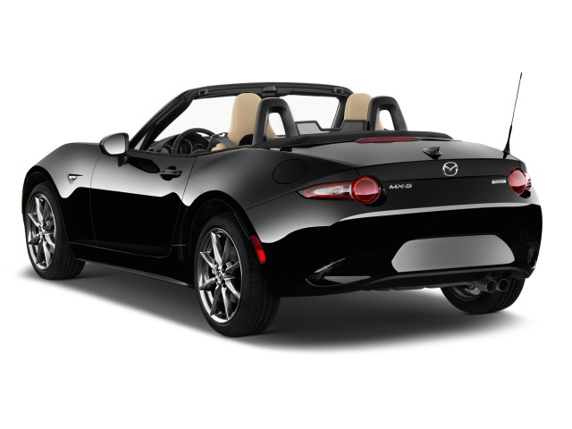
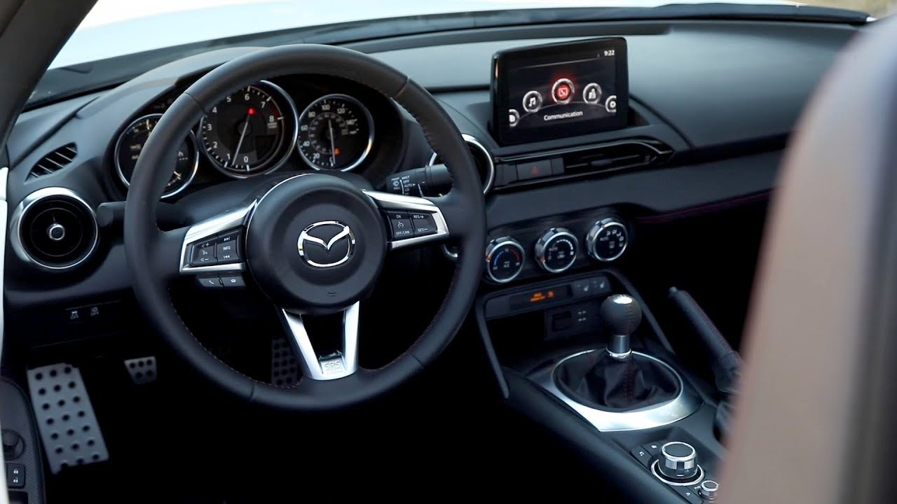

| Home | About us | Brands | Suvs | Sedans | Vans | Sports & Hatchbacks | Contact us |
Mazda Miata 2017
For the Mazda MX-5 Miata, the philosophy is, and always has been, back to basics. Now in its fourth generation, that holds more than ever, as Mazda has strived to keep weight down and the fun factor high. We rate the 2017 Mazda MX-5 Miata a 8. Highlights include frisky acceleration, nimble handling, sleek styling, and thrifty fuel economy, while the only real drawbacks are a lack of space and some missing safety features. (Read more about how we rate cars.) The Miata enters the second year since its redesign by adding the RF body style. RF stands for "retractable fastback," and it comes with a retractable hardtop that gives it the look of a coupe with the top up and a targa with the top down. The RF joins the standard roadster, but it has a premium price and is only offered in the higher line Club and Grand Touring models, leaving the base Sport model to the roadster. The look is low and sleek, with gracious curves and fine detailing inside and out.
Weighing in at roughly 2,300-2,400 pounds, the Miata delivers plenty of smiles per mile. The engine is a pedestrian 2.0-liter 4-cylinder making 155 horsepower, but it can launch this car from 0-60 mph in about six seconds. A 6-speed manual transmission offers the most feel and the most fun, but the 6-speed automatic works well, too, especially in its Sport mode.
Dynamically, the Miata is among the best cars on the market, and it proves that a sports car doesn’t need to ride rough or remain flat through corners to be fun. The Miata leans in turns, then takes a set and carves corners predictably. The ride is firm but almost as forgiving as a family sedan.

The interior has just enough space for two and there is some room for their small items and a couple of overnight bags. The ergonomics of the cockpit are exemplary, the cabin is quieter than it was in the past, and the RF model shuts out noise even better with the top up. Despite the back to basics approach, the Miata offers some nods to modernity. An infotainment system is standard on all but the base model, and it comes with satellite radio, access to apps, and a text messaging function. The Grand Touring model offers such niceties as heated leather seats, automatic climate control, and a universal garage door opener. The Club model is even sportier; when ordered with the manual transmission, it comes with Bilstein shocks, a shock tower brace, and a limited-slip differential. Buyers can also get BBS wheels and Brembo brakes. The Miata also features some modern active safety features, including blind-spot monitors with rear cross traffic alerts, lane departure warnings, automatic high beams, and adaptive headlights that point into turns.
Fuel economy is tops among sports cars, with the automatic transmission delivering 26 mpg city, 35 highway, 29 combined.